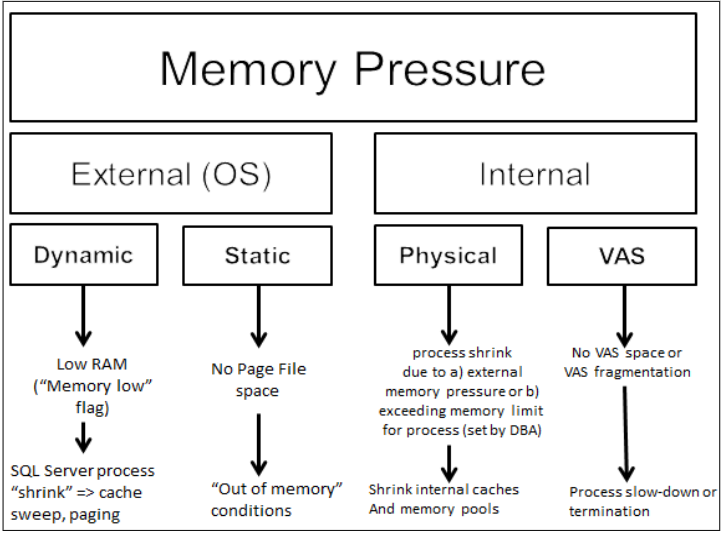

Capítulo 4: Gerenciamento de Memória
A alocação e o consumo de memória no SQL Server são uma fonte constante de perguntas nos fóruns online. É muito comum o SQL Server utilizar grandes quantidades de memória e, uma vez alocada essa memória, ela não é liberada. Esse comportamento difere do exibido pela maioria das outras aplicações e leva alguns usuários a acreditar que o SQL Server possui um vazamento de memória, quando esse não é o caso.
Este capítulo examinará como o SQL Server realmente aloca memória, como isso afeta as operações contínuas do servidor e, especificamente, as diferenças entre alocações de memória em servidores de 32 bits e 64 bits.
Em seguida, discutiremos como diagnosticar a pressão de memória no SQL Server, quando o SQL Server é forçado a operar com uma quantidade insuficiente de memória, usando contadores de desempenho relacionados à memória e Exibições de Gerenciamento Dinâmico.
Por fim, discutiremos alguns problemas comuns associados às alocações de memória do SQL Server nas diversas plataformas e como resolver esses problemas, por exemplo, ajustando opções de configuração relacionadas à memória no SQL Server. Conforme você avança nos capítulos, é importante prestar atenção aos casos específicos em que se recomenda alterar as opções de configuração de memória. Uma configuração incorreta das opções de memória pode causar mais problemas do que as opções padrão, dependendo da alteração realizada.
A alocação e o uso de memória no SQL Server são tópicos complexos, e vamos nos aprofundar apenas o suficiente para permitir um entendimento básico das questões de memória do SQL Server que podem surgir. Se você quiser saber mais após ler este capítulo, recomendo o trabalho de Mark Russinovich (por exemplo, http://blogs.technet.com/b/markrussinovich/archive/2008/07/21/3092070.aspx) e Christian Bolton, especialmente sua apresentação "A Walk Down Memory Lane" no SQLBits III (http://sqlbits.com/Sessions/Event3/A_walk_down_memory_lane).
O Motor de Banco de Dados Autoajustável
Por muito tempo, a Microsoft tem se comprometido com a visão de um motor de banco de dados SQL Server autoajustável, como uma forma de reduzir o custo total de propriedade do produto. A partir do SQL Server 2005, o SQL Server gerencia dinamicamente o uso da memória e pode alterar seu uso de memória sem exigir a reinicialização do motor de banco de dados. O SQL Server simplesmente não oferece opções de configuração para ajustar com precisão as alocações de memória que são comuns em outras plataformas de SGBD. Em vez disso, a quantidade de memória alocada para componentes individuais, como o cache de plano, é controlada automaticamente e totalmente pelo motor de banco de dados, dependendo da carga de trabalho atual do SQL Server e de outras atividades no servidor. A memória não pode ser alocada manualmente.
Embora o SQL Server não tenha os recursos para controlar alocações de memória específicas, ainda existem algumas opções de configuração que afetam como o motor de banco de dados utiliza a memória. Se essas opções de configuração requerem ou não alterações em relação aos valores padrão especificados durante a instalação do sistema depende de vários fatores, incluindo as versões e edições do sistema operacional Windows e do SQL Server utilizados, a quantidade de memória física instalada no servidor e a arquitetura do processador (x86, x64, IA64).
Como o SQL Server Aloca Memória
Na primeira vez que alguém olha a guia "Processos" no Gerenciador de Tarefas do Windows em uma máquina típica do SQL Server, conforme mostrado na Figura 4.1, geralmente se surpreende com a quantidade de memória que está sendo utilizada no servidor, principalmente pelo processo sqlservr.exe. O primeiro instinto de alguém que não entende como o SQL Server funciona é pensar que há um vazamento de memória no SQL Server, o que não é o caso.
Figura 4.1: Uso de memória do processo SQL Server (configurações padrão).
Existe uma grande diferença entre o uso intenso de memória e um vazamento de memória, e o SQL Server é projetado para usar memória em grandes quantidades, a fim de armazenar em cache informações, como páginas de dados recentemente usadas. Isso melhora o desempenho ao reduzir a necessidade de ler constantemente dados do disco, uma operação muito mais lenta e cara do que acessá-los na memória.
Como regra geral, o SQL Server usará toda a memória que você puder fornecer e não liberará a memória que foi alocada durante as operações normais, a menos que o sistema operacional tenha definido a sinalização de notificação de recursos de memória baixa, que faz o SQL Server reduzir suas alocações de memória. Uma das funcionalidades de autoajuste adicionadas ao SQLOS no SQL Server 2005 foi uma thread dedicada que monitora as notificações de memória emitidas pelo sistema operacional Windows para informar outras aplicações sobre o status do uso de memória no sistema operacional. O Windows OS define duas notificações de memória:
- memória alta informa ao SQL Server que ele pode aumentar seu conjunto de trabalho e usar memória adicional.
- memória baixa informa ao SQL Server que o sistema operacional está sob pressão de memória e que o SQL Server deve tentar reduzir seu conjunto de trabalho para devolver memória ao sistema operacional.
Se nenhuma das sinalizações for definida pelo Windows, o uso de memória é estável e o SQL Server continuará operando dentro de seu espaço de processo existente. Essa funcionalidade não existia antes do Windows Server 2003 e do SQL Server 2005. Slava Oks, um desenvolvedor da equipe SQLOS do SQL Server 2005, tem um post em seu blog sobre pressão de memória (http://blogs.msdn.com/b/slavao/archive/2005/02/01/364523.aspx), que explica os tipos básicos de pressão de memória e suas possíveis consequências (veja a Figura 4.2). A notificação de "memória baixa", por exemplo, é resultado do que Slava chama de pressão dinâmica externa (SO) de memória. O post também discute a necessidade de receber notificações desse tipo de pressão e como o SQL Server foi projetado para gerenciar dinamicamente o uso de memória com base nas notificações de memória do Windows.
Figura 4.2: Resumo dos tipos básicos de pressão de memória no SQL Server.
A quantidade de memória que o SQL Server pode usar depende de vários fatores:
- quantidade de memória física instalada no servidor;
- limites de memória do sistema operacional Windows instalado (consulte http://msdn.microsoft.com/en-us/library/aa366778.aspx);
- arquitetura do SQL Server (32 bits versus 64 bits);
- opções de configuração do SQL Server que controlam o uso de memória;
- versão e edição do SQL Server.
Esses foram listados na ordem de limitação; por exemplo, se o servidor tiver apenas 4 GB de memória física (RAM) instalada, esse será o limite máximo para o SQL Server.
Se um servidor tiver 64 GB de RAM e o sistema operacional Windows for o Windows Server 2008 64 bits Standard Edition, então o limite do SO é de 32 GB, que é o máximo que pode ser usado pelo SQL Server.
Se uma edição de 32 bits do SQL Server for instalada em um sistema Windows Server 2008 x64 Enterprise Edition com 128 GB de RAM, a quantidade máxima de memória que o SQL Server pode acessar, nas configurações padrão do WOW64, seria de 4 GB, já que um ponteiro de 32 bits só pode "ver" no máximo 4 GB (232/10243). No entanto, configurando as opções de configuração apropriadas do SQL Server (ou seja, habilitando AWE - Address Windowing Extensions, como discutido posteriormente), o SQL Server pode acessar memória adicional por meio das Physical Address Extensions (PAE). Isso altera o ponteiro para 36 bits e, com o uso do AWE para alocar a memória, aumenta a quantidade máxima de memória para 64 GB (236/10243).
A versão e edição do SQL Server ocasionalmente podem afetar o limite de memória para o SQL Server. Por exemplo, no SQL Server 2000, a capacidade de habilitar o uso de memória AWE era um recurso exclusivo da edição Enterprise, portanto, se você estivesse usando a edição Standard, o SQL Server não teria acesso a essa memória adicional. No SQL Server 2005, o uso de AWE se tornou um recurso da edição Standard, e essa limitação de edição foi removida. Outro exemplo é que, no SQL Server 2005 e 2008, as edições de 64 bits em execução na Enterprise Edition podem usar Large Pages (discutidas posteriormente neste capítulo).
Limitações do Espaço de Endereço Virtual de 32 bits
O sistema operacional Windows executa cada processo, incluindo o processo do SQL Server, em sua própria área dedicada de memória virtual, conhecida como Espaço de Endereço Virtual (VAS). Um dos maiores desafios com o gerenciamento de memória para o SQL Server de 32 bits é a quantidade limitada de VAS à qual um processo de 32 bits tem acesso. Um processo de 32 bits só pode acessar no máximo 4 GB de memória, portanto, um processo de SQL Server de 32 bits tem acesso apenas a 4 GB de VAS. O VAS é dividido em duas regiões: espaço de modo kernel (ou sistema) e espaço de modo usuário (ou aplicação).
O VAS do modo kernel é usado pelo sistema operacional para mapear várias estruturas de dados do sistema, como o cache de arquivos, pools paginados e não paginados (discutidos brevemente posteriormente). O VAS do modo usuário é usado para mapear a memória para o processo de aplicação em execução atualmente (no nosso caso, o SQL Server).
Por padrão, o Windows divide o VAS igualmente em 2 GB de VAS de modo kernel e 2 GB de VAS de modo usuário. Em outras palavras, o VAS total é de 4 GB, mas um único processo de SQL Server de 32 bits pode acessar apenas 2 GB no VAS de modo usuário para seu conjunto de trabalho. Usando a configuração padrão, o SQL Server aloca memória nesses 2 GB de VAS de modo usuário para o buffer pool (cache de dados e plano), com uma quantidade menor de memória necessária para alocações fora do buffer pool (multipáginas).
Nas próximas seções, discutiremos os seguintes tópicos:
- Como o SQL Server aloca memória no VAS de modo usuário.
- Reserva de memória para alocações fora do buffer pool.
- Como estender o VAS de modo usuário para um máximo de 3 GB, usando ajustes no VAS.
- Como disponibilizar para o processo do SQL Server uma área de memória separada e maior (>4 GB), chamada de memória AWE, para alocações de cache de dados.
Observe que muitos dos conceitos e limitações discutidos nesta seção se aplicam apenas a instalações de SQL Server de 32 bits. Consulte a seção "Uso do SQL Server de 64 bits" para obter detalhes sobre instalações de 64 bits.
Alocação do VAS de modo usuário e VirtualAlloc
O SQL Server reserva 2 GB de VAS de modo usuário, mas não aloca essa memória até que ocorra uma alocação de memória física. O SQL Server aloca memória no VAS de modo usuário fazendo chamadas para a função VirtualAlloc na API do Windows. Se você estiver executando uma versão de 32 bits do Windows OS ou do SQL Server, uma chamada para o VirtualAlloc retornará um ponteiro de 32 bits e, como discutido anteriormente, isso limita a quantidade de VAS de modo usuário que o SQL Server pode usar a 2 GB.
A memória alocada pelo VirtualAlloc não precisa estar fisicamente presente, portanto, 2 GB de VAS de modo usuário ainda seriam reservados pelo Windows para uso do SQL Server, independentemente da quantidade de memória física (RAM) instalada. No entanto, quando essa memória é usada (cometida), ela precisa estar respaldada por RAM (ou pelo arquivo de paginação), e o Windows garante que a quantidade de memória cometida pelo SQL Server e por quaisquer outros processos seja menor ou igual à memória física instalada, mais a capacidade do arquivo de paginação.
No entanto, se você tiver menos de 2 GB de RAM instalada (raro nos dias de hoje), o limite de RAM se torna o limite máximo rígido de memória que o SQL Server irá cometer. Durante o aumento inicial de memória, o SQL Server garantirá que o cache de buffers seja menor do que a RAM física disponível; o SQL Server não vai cometer memória que está garantida para ser paginada para fora do cache de buffers, pois o objetivo principal de ter o cache de buffers na memória é reduzir a atividade física do disco. Na verdade, o seu buffer pool será um pouco menor do que a RAM instalada, devido a requisitos adicionais de memória do SQL Server, que são discutidos em mais detalhes na próxima seção, Alocações fora do buffer pool (MemToLeave).
Por fim, observe que qualquer memória alocada pelo VirtualAlloc é paginável; isso significa que o sistema operacional Windows pode forçar essa memória a ser paginada para o disco, em resposta à pressão de memória.
Alocações fora do buffer pool (MemToLeave)
Conforme discutido, as maiores alocações de memória feitas pelo SQL Server geralmente são para o buffer pool, para páginas de dados e armazenamento em cache de planos de execução. No entanto, qualquer alocação de memória do VAS de modo usuário que requer mais de 8 KB de memória contígua seria uma alocação fora do buffer pool, feita pelo alocador de várias páginas. Exemplos dessas alocações de várias páginas incluem alocações de pilha de threads, alocações de heap, procedimentos armazenados estendidos, SQLCLR, servidores vinculados e buffers de backup. Dentre esses, os buffers de backup, ou seja, a série de buffers alocados no início de um backup de banco de dados, são um dos consumidores mais comuns de memória fora do buffer pool, sendo que o espaço total necessário pelos buffers de backup é o número de buffers multiplicado pelo tamanho máximo de transferência de dados (MaxTransferSize * BackupBufferCount). Não é incomum uma operação de backup reservar 16 buffers de backup; com cada buffer de backup tendo tamanho de 4 MB, isso por si só consumirá 64 MB de memória fora do buffer pool.
Para garantir que haja memória VAS suficiente para os requisitos de alocação fora do buffer pool, as edições de 32 bits do SQL Server reservam, ao inicializar, uma porção contígua do VAS comumente chamada de MemToLeave.
Cálculo do MemToLeave (ou Reserva de VAS)
Isso se aplica apenas a instâncias de 32 bits do SQL Server e não é realizado em instâncias de 64 bits do SQL Server.
Uma vez que essa reserva é feita, o tamanho do buffer pool é determinado com base na quantidade de memória física instalada no servidor e no restante do VAS.
Para o SQL Server 2005 e 2008, o cálculo do MemToLeave é calculado a partir do tamanho necessário da pilha de threads em MB, que é:
MaxWorkerThreads * 0.5 MB + tamanho de reserva padrão (256 MB),
onde MaxWorkerThreads = (ProcessorCount-4) + 256.
Para o SQL Server 2000, o cálculo é MaxWorkerThreads = 256.
Em geral, para instalações do SQL Server de 32 bits usando as opções de configuração padrão do Windows e do SQL Server, a quantidade de reserva do MemToLeave é de pelo menos 384 MB ((256*0.5) + 256) e geralmente inferior a 432 MB, dependendo do número de processadores instalados no servidor. O parâmetro de inicialização -g para o serviço do SQL Server, abordado em breve, pode ser usado para aumentar a quantidade de VAS reservada pelo cálculo do MemToLeave.
Quando isso é subtraído dos 2 GB do VAS de modo usuário, a porção restante está disponível para o buffer pool, até a memória física disponível instalada no servidor. Portanto, para servidores com 2 GB de RAM ou mais, isso significa que cerca de 1,6 GB de RAM estarão disponíveis para o buffer pool.
Para permitir que o SQL Server de 32 bits utilize qualquer memória adicional para alocações do buffer pool, existem duas opções, e a opção apropriada depende da quantidade de memória instalada no servidor.
Para servidores com 4 GB de RAM, podemos aplicar o conceito conhecido como Ajuste de 4 Gigabytes (4GT) ou, de forma mais geral, ajuste do VAS para obter um VAS adicional de modo usuário (em detrimento do VAS de modo kernel). Para servidores com mais de 4 GB de RAM, podemos disponibilizar uma área separada de memória que pode ser usada exclusivamente para alocações na porção de cache de dados do buffer pool, habilitando o AWE (Address Windowing Extensions).
Ajuste do VAS (Virtual Address Space)
Para servidores com 4 GB de memória, é possível alterar a forma como o VAS é alocado entre processos de modo usuário e modo kernel. Em vez de uma divisão de 50:50, é possível alocar até 1 GB de espaço adicional para o VAS de modo usuário do buffer pool. No Windows Server 2008, esse processo é geralmente chamado de ajuste do VAS, embora em versões anteriores do Windows fosse chamado de Ajuste de 4 Gigabytes (4GT).
É claro que o compromisso com o ajuste do VAS é que você acaba tendo até 1 GB a menos de espaço para o VAS de modo kernel, e isso pode ter consequências significativas. Quando o VAS de modo kernel é reduzido, o número de Entradas de Tabela de Páginas (PTEs) do sistema é reduzido, o que, por sua vez, reduz a quantidade total de memória que o SQL Server pode acessar.
Conceitos críticos: Entradas de Tabela de Páginas
As PTEs permitem o mapeamento de endereços de memória virtual para endereços de memória física. Se houver um número insuficiente de PTEs no espaço de endereço do kernel do Windows, a quantidade de memória física que pode ser acessada de forma estável pelo sistema é limitada. As PTEs usadas para mapear a memória AWE, por exemplo, devem permanecer residentes na memória para garantir a estabilidade do sistema.Em resumo, se um espaço de endereço insuficiente for alocado para o VAS de modo kernel, isso pode levar a instabilidade do sistema, portanto, é necessário ter cuidado ao usar o ajuste do VAS.
No Windows Server 2008, o ajuste do VAS para servidores de 32 bits é realizado por meio do comando BCDEdit /set no prompt de comando, definindo o valor para a opção increaseuserva entre 2048 e 3072 MB.
No Windows Server 2000 e posterior, dois parâmetros podem ser adicionados ao arquivo boot.ini para controlar como o VAS é dividido. O parâmetro /3GB no boot.ini altera a alocação para que 3 GB sejam alocados para o VAS de modo usuário e 1 GB seja alocado para o modo kernel. Nos casos em que a divisão 3 GB:1 GB se mostrar problemática, o parâmetro /USERVA pode ser usado em conjunto com o parâmetro /3GB para ajustar a divisão e alocar VAS adicional para o espaço de endereço do modo kernel, aumentando levemente o número de PTEs e o tamanho do Pool Não Paginado (Non-Paged Pool).
Para obter mais informações sobre o ajuste do VAS de 4GT...
...consulte o Books Online, "Tópico: Ajuste de 4 Gigabytes" (http://msdn.microsoft.com/en-us/library/bb613473(v=vs.85).aspx).
O argumento em favor do AWE
Em servidores de 32 bits nos quais são instalados mais de 4 GB de RAM, o SQL Server pode utilizar a memória acima de 4 GB por meio do uso das Address Windowing Extensions (AWE), desde que o sistema operacional Windows o suporte. O AWE é significativamente mais flexível e permite que mais memória seja disponibilizada do que no caso do 4GT. No entanto, o AWE requer configuração adicional do sistema operacional para usar as Physical Address Extensions (PAE).
No Windows Server 2008, a PAE é habilitada por meio do uso do comando BCDEdit /set no prompt de comando, definindo a opção PAE como ForceEnable. No Windows Server 2000 e 2003, a PAE é habilitada por meio do uso do parâmetro /PAE no arquivo boot.ini. Quando a PAE é usada pelo sistema operacional, o ponteiro de 32 bits usado para o gerenciamento de memória é expandido em 4 bits, para 36 bits, permitindo que o sistema operacional acesse até 64 GB de RAM. No entanto, para que os aplicativos aproveitem essa memória adicional, eles devem usar o AWE.
Enquanto o ajuste do VAS está relacionado à realocação do VAS, a memória alocada usando o AWE é completamente separada. Ao alocar memória acima do limite de 4 GB usando o AWE, o SQL Server não usa chamadas para VirtualAlloc, mas sim chama a função AllocateUserPhysicalPages no Windows. Ao contrário da memória alocada usando VirtualAlloc, a memória alocada usando AllocateUserPhysicalPages é mapeada usando PTEs e precisa estar fisicamente disponível no servidor para ser alocada. Além disso, uma vez feita a alocação, a memória fica bloqueada e não pode ser paginada pelo Windows.
A memória alocada pelo SQL Server usando o AWE pode ser usada apenas para a porção de cache de dados do buffer pool. Portanto, ao usar o AWE, todo o cache de dados é alocado na memória do AWE (e não pode ser paginado), e o restante do buffer pool (principalmente o cache de planos) e quaisquer alocações fora do buffer pool que exijam espaço de endereço virtual de modo usuário continuarão sendo mapeadas dentro dos 2 GB de VAS de modo usuário.
Para que o SQL Server possa usar o AWE para alocar memória, a PAE deve ser habilitada, conforme descrito anteriormente. Em seguida, a opção 'awe enabled' no sp_configure deve ser ativada dentro do SQL Server, e a conta de serviço do SQL Server deve ter a permissão "Lock Pages in Memory" (Bloquear Páginas na Memória) atribuída a ela nas Políticas de Segurança Local do Windows (usando a ferramenta de Diretiva de Grupo do Windows, gpedit.msc). Se você ativar uma ou ambas as opções, ou ativar ambas ao mesmo tempo, será necessário reiniciar o mecanismo do banco de dados para que as alterações entrem em vigor.
Como mencionado anteriormente, um dos efeitos colaterais de conceder os direitos de usuário "Lock Pages in Memory" à conta de serviço do SQL Server é que a memória alocada para o buffer pool usando o AWE é bloqueada e não pode ser paginada se o sistema operacional Windows ficar com pouca memória. Por esse motivo, sempre que o AWE estiver sendo usado, é recomendável definir a opção 'max server memory' no sp_configure para estabelecer um limite superior rígido para a memória que pode ser alocada para o buffer pool e garantir que memória suficiente esteja disponível para o sistema operacional após a inicialização da memória do SQL Server. Se o sistema operacional Windows sofrer pressão de memória, ele definirá a bandeira de notificação de memória baixa. O SQL Server sempre responderá a isso realizando uma varredura no cache e tentando liberar memória (até o valor especificado pela configuração min server memory). No entanto, durante esse período, o sistema operacional não pode paginar a memória AWE, pois ela está bloqueada. Se o SQL Server não conseguir liberar memória suficiente rapidamente, o sistema operacional pode entrar em um estado instável em que ele não pode paginar e nem alocar mais memória.
Para sistemas com menos de 16 GB de RAM, é possível usar os métodos 4GT discutidos na seção anterior em conjunto com o AWE, mas geralmente não é recomendado. Um dos efeitos colaterais de incluir o parâmetro /3GB no arquivo de inicialização para o ajuste do 4GT é que a quantidade total de memória que o Windows pode gerenciar é reduzida de 64 GB para 16 GB devido à redução no número de PTEs causada pela redução do espaço de endereço do modo kernel. Em sistemas com mais de 16 GB de RAM, o uso do ajuste do 4GT em conjunto com o AWE não é suportado pela Microsoft (consulte http://support.microsoft.com/kb/274750).
O parâmetro de inicialização -g
Anteriormente neste capítulo, foi observado que durante a inicialização de servidores SQL de 32 bits, uma porção do espaço de endereço virtual (VAS) do modo usuário é reservada (em um processo chamado Reserva de VAS) para alocações de memória fora do buffer pool. O tamanho dessa reserva MemToLeave geralmente é muito pequeno em comparação com a quantidade de memória que um servidor SQL pode ter instalada e em relação ao tamanho do buffer pool.
Para a maioria dos sistemas, isso não é um problema, já que a maioria da memória consumida pelo SQL Server não é proveniente dessa região de espaço de endereço reservado, mas do buffer pool. No entanto, à medida que as aplicações se tornaram mais complexas, também aumentaram os bancos de dados que as suportam, e é possível que a reserva de VAS padrão para uma instância do SQL Server não seja grande o suficiente para atender aos requisitos de alocação de memória fora do buffer pool.
Agravando o problema do tamanho insuficiente do VAS fora do buffer pool está a fragmentação da reserva de VAS que existe. As alocações de memória do VAS devem ser feitas de forma contígua, e é possível que haja VAS suficiente, mas ele esteja fragmentado e o tamanho contíguo apropriado necessário para uma alocação de memória não esteja disponível.
Determinar qual desses dois problemas existe pode ser feito consultando a visão de gerenciamento dinâmico sys.dm_os_virtual_address_dump para encontrar o tamanho do VAS disponível no sistema e o tamanho do maior espaço contíguo disponível.
Determinando o VAS disponível
O MVP do SQL Server, Christian Bolton, fornece um script para determinar a quantidade de VAS disponível para o SQL Server e o tamanho do maior bloco contíguo de VAS em sua postagem no blog "SQL Server memtoleave, VAS and 64-bit" (http://sqlblogcasts.com/blogs/christian/archive/2008/01/07/sql-servermemtoleave-vas-and-64-bit.aspx).
O parâmetro de inicialização -g para o serviço do SQL Server pode ser usado para aumentar a quantidade de VAS reservada pela reserva MemToLeave durante a inicialização. Este parâmetro pode ser usado com um valor inteiro maior que 256 para especificar o tamanho em megabytes a ser usado para a variável de reserva base do cálculo de dimensionamento do MemToLeave. Por padrão, a reserva base tem um tamanho de 256 MB, ao qual o tamanho calculado da pilha de threads (como mostrado anteriormente) para a instância é adicionado para obter o tamanho total da reserva MemToLeave VAS. Quando essa opção é usada, reduz-se o VAS do modo usuário disponível para o buffer pool e, portanto, reduz-se o tamanho máximo do buffer pool para a instância do SQL.
A fragmentação do MemToLeave é um problema mais difícil de lidar; se você entrar em contato com o suporte da Microsoft com esse problema, provavelmente será informado de que a única solução é fazer upgrade para o SQL Server de 64 bits. A razão dessa recomendação é que o tamanho do VAS em um servidor de 64 bits é de 8 TB, o que excede a quantidade de RAM física atualmente possível em um servidor, o que significa que sempre haverá VAS disponível para alocações de memória fora do buffer pool pelo SQL Server. Se você não puder fazer upgrade imediato para o SQL Server de 64 bits, suas únicas opções atualmente são agendar reinicializações frequentes da instância ou usar o parâmetro de inicialização -g para atribuir mais memória ao MemToLeave com a ideia de que a fragmentação terá menos efeito.
Usando o SQL Server de 64 bits
A primeira versão de 64 bits do SQL Server 2000 foi lançada em 2003 e trouxe mudanças significativas na gerência de memória para o SQL Server. Nas próximas seções, discutiremos algumas das alterações mais importantes, algumas das quais pegaram alguns DBAs de surpresa.
Limites de memória VAS mais altos
Uma das vantagens dos sistemas de 64 bits é que os limites de VAS são substancialmente maiores. Enquanto os sistemas de 32 bits têm apenas 4 GB de Espaço de Endereço Virtual, os sistemas de 64 bits possuem 16 exabytes (264) de VAS, tornando-o praticamente ilimitado em comparação com as quantidades de RAM física que podem ser instaladas em um servidor atualmente. Na realidade, gerenciar tanto VAS apresenta desafios significativos, e os tamanhos dos espaços de endereço em modo kernel e modo usuário são atualmente limitados a 8 TB cada em sistemas x64, e 7 TB cada em sistemas IA64 (Itanium).
Esse VAS muito maior significa que as instâncias do SQL Server de 64 bits não exigem nenhuma configuração adicional para alocar memória acima de 4 GB; a opção AWE habilitada não tem aplicação para essas instâncias. No entanto, a opção Lock Pages in Memory (Bloquear Páginas na Memória) ainda pode ser relevante (discutida em breve).
Grandes quantidades de memória paginável sob configuração padrão
Assim como no SQL Server de 32 bits, o comportamento padrão do SQL Server de 64 bits é alocar memória VAS usando a função VirtualAlloc do Windows. Isso significa que toda essa memória não está bloqueada e é paginável. Isso pegou muitos administradores de surpresa; no SQL Server de 32 bits, eles tinham até 2 GB de memória alocada em modo usuário VAS e, em seguida, uma quantidade adicional maior que era habilitada usando AWE e, portanto, estava bloqueada. Agora, no SQL Server de 64 bits, toda a memória pode ser comprometida usando apenas VAS, tornando-a toda paginável, o que pode criar problemas significativos para o SQL Server se o sistema operacional estiver sob pressão de memória e decidir paginar o conjunto de trabalho do SQL Server.
Esse foi um dos problemas que se tornaram aparentes no início dos servidores SQL de 64 bits que foram instalados usando a configuração padrão e deixados em execução. Discutiremos esse problema com mais profundidade em breve, na seção Bloquear páginas na memória.
Nenhun cálculo de MemToLeave para alocações fora do buffer pool
O tamanho do Espaço de Endereço Virtual em um servidor de 64 bits garante que, mesmo depois que a memória do buffer pool foi alocada pelo SQL Server, ainda haverá VAS suficiente em modo usuário disponível para lidar com solicitações de memória fora do buffer pool. Isso significa que o conceito de Reserva de VAS (MemToLeave) para alocações fora do buffer pool não se aplica aos servidores SQL de 64 bits (e, portanto, o parâmetro de inicialização -g não tem significado). Esse problema é discutido com mais detalhes em breve, em relação à definição do valor max server memory no SQL Server de 64 bits, mas basicamente a falta de Reserva de VAS significa que é importante considerar alocações de memória fora do buffer pool e fora do SQL Server, monitorando o contador Memory/Available MBytes para garantir que ele permaneça acima de 150-300 MB ao aumentar gradualmente o valor max server memory.
Cache de procedimentos significativamente maior
Como o VAS em modo usuário é significativamente maior, o cache de procedimentos do SQL Server, onde os planos de execução são armazenados, pode alocar significativamente mais memória em sistemas de 64 bits, o que surpreendeu muitos DBAs que fizeram upgrade de seu hardware enquanto usavam o SQL Server 2005 RTM ou Service Pack 1. Se o banco de dados deles tivesse uma carga de trabalho ad hoc que gerasse um grande número de planos de uso único, eles descobririam que esses planos começavam a consumir até metade da memória disponível em seu servidor.
Compreendendo as alterações no dimensionamento do cache de procedimentos no SQL Server
A equipe de Programabilidade do SQL Server blogou sobre os desafios associados ao dimensionamento do cache de procedimentos em servidores SQL de 64 bits devido ao tamanho do VAS em modo usuário e como os algoritmos de dimensionamento do cache foram alterados no SQL Server 2005 Service Pack 2 para reduzir os problemas associados ao crescimento excessivo do cache para cargas de trabalho ad hoc em sua postagem no blog: "Mudanças no Comportamento de Armazenamento em Cache entre o SQL Server 2000, SQL Server 2005 RTM e SQL Server 2005 SP2" (http://blogs.msdn.com/b/sqlprogrammability/archive/2007/01/22/3-0-changes-in-caching-behavior-between-sql-server-2000-sql-server-2005-rtm-and-sql-server-2005-sp2.aspx).
Opções de configuração de memória com o SQL Server de 64 bits
As seções a seguir abordam considerações especiais para definir opções de configuração de memória importantes ao usar o SQL Server de 64 bits, ou seja, max (e min) server memory e Lock Pages in Memory. Também discute brevemente uma Flag de Trace especial (834) que, quando habilitada em servidores de 64 bits, faz com que o SQL Server use Alocações de Páginas Grandes do Windows para alocações do buffer pool.
Memória mínima e máxima do servidor
O SQL Server oferece duas configurações em nível de instância que podem ser usadas para controlar como a memória é alocada e removida do buffer pool: as opções de configuração do sp_configure: min server memory e max server memory. Observe que no SQL Server 2000, 2005, 2008 e 2008 R2, essas configurações se aplicam apenas ao tamanho do buffer pool e não incluem a memória que pode ser alocada pelo SQL Server fora do buffer pool.
A opção min server memory especifica o tamanho mínimo para o qual o SQL Server pode reduzir o buffer pool quando sob pressão de memória; ela não especifica a quantidade mínima de memória que o SQL Server alocará inicialmente. Durante o aumento de memória, o uso de memória de uma instância aumenta lentamente e o buffer pool é expandido para atender às necessidades das solicitações em execução. A opção max server memory especifica a quantidade máxima de memória que o SQL Server pode usar para o buffer pool, que é usada principalmente para armazenar em cache páginas de dados na memória.
A configuração apropriada para cada uma dessas opções de configuração depende da implementação do SQL Server. É comum encontrar recomendações online que afirmam algo como:
"Se um SQL Server é dedicado apenas à execução do mecanismo de banco de dados do SQL Server, geralmente cada uma dessas opções pode ser configurada com o mesmo valor, para que o SQL Server aloque memória para o buffer pool e depois não reduza o uso de memória uma vez que esse nível tenha sido alcançado."
Embora essa informação seja tecnicamente correta, não é a configuração recomendada que eu faria para um SQL Server dedicado. O problema que tenho com essa configuração é que, quando o Lock Pages in Memory está sendo usado, essa configuração limita até onde o SQL Server pode responder a notificações de baixa memória do sistema operacional, esvaziando suas caches e reduzindo o uso de memória para liberar memória de volta para o sistema operacional para uso. Isso pode resultar em problemas de instabilidade do sistema e, por esse motivo, eu recomendaria que a configuração de min server memory seja definida em um valor inferior à configuração de max server memory por alguns gigabytes de memória, permitindo que o SQL Server redimensione o buffer pool conforme necessário para responder às notificações de baixa memória do sistema operacional.
Se o SQL Server também executar o Reporting Services, Integration Services ou outros aplicativos que requerem memória do Windows, essas opções devem ser configuradas com um intervalo para que a min server memory seja configurada com um limite inferior aceitável para a memória alocada ao buffer pool e a max server memory seja definida em um limite superior, permitindo que o SQL Server aumente ou diminua o uso de memória dentro do intervalo estabelecido, conforme necessário, enquanto outros processos estão em execução.
Uma das perguntas populares em fóruns online do SQL Server é: "Qual é a configuração adequada de memória máxima do servidor para um SQL Server com N gigabytes de RAM instalada?" Infelizmente, não há uma única configuração que se aplique a todos os ambientes para essa opção; diferentes servidores têm processos diferentes em execução e o que é melhor para um servidor não será o mesmo para outro servidor. A melhor resposta é definir o valor inicial como sendo suficientemente baixo para garantir que o sistema operacional não tenha problemas de pressão de memória e, em seguida, monitorar o contador de desempenho Memory\Available Mbytes no servidor (juntamente com possivelmente contadores como Total Server Memory e Target Server Memory, abordados posteriormente) para determinar o valor para a max server memory que deixe pelo menos 150-300 MB de memória disponível o tempo todo para os requisitos de memória de alocações fora do buffer pool e fora do SQL Server, para o Windows e outros aplicativos.
Como configuração básica geral para uma máquina dedicada ao SQL Server, reserve 1 GB de RAM para o sistema operacional, 1 GB para cada 4 GB de RAM instalados de 4 a 16 GB e, em seguida, 1 GB para cada 8 GB de RAM instalados acima de 16 GB de RAM. Isso significa que, para um servidor com 64 GB de RAM, o ponto de partida para a max server memory deve estar na faixa de 54 GB e, em seguida, ajustado para cima com base no monitoramento do contador de desempenho Memory\Available Mbytes.
Bloquear páginas na memória
Embora o processo do SQL Server seja projetado para ser autoajustável em relação às suas próprias necessidades de alocação de memória, ele não pode levar em consideração as demandas de memória feitas por outros processos em execução no servidor, ou por operações como cópias de arquivos. Sua natureza autoajustável significa que ele responderá à pressão de memória quando sinalizado pelo sistema operacional.
Isso significa que, em última análise, o sistema operacional está no controle da resposta à pressão de memória, e uma das formas de resposta do SO é reduzindo e possivelmente paginando o conjunto de trabalho de processos que estão consumindo memória, incluindo, é claro, o processo do SQL Server. Quando isso ocorre, alocações de memória que são suportadas por memória física são gravadas na memória virtual no arquivo de página do sistema no disco. Se o conjunto de trabalho do processo for relativamente pequeno, isso geralmente não é um grande problema, mas em servidores SQL de 64 bits com grandes quantidades de RAM instalada, em que toda a memória é comprometida apenas usando VAS (espaço de endereço virtual), isso pode afetar significativamente o desempenho.
Se o SQL Server sofrer uma redução no conjunto de trabalho ou a memória for paginada, o SQL gravará uma mensagem no log de erros da seguinte forma:
Uma parte significativa da memória do processo do SQL Server foi paginada. Isso pode resultar em uma degradação de desempenho. Duração: 0 segundos. Conjunto de trabalho (KB): 16484, comprometido (KB): 6239692, utilização de memória: 0%.
Se essa mensagem for vista com frequência, indica que há um problema com o SQL sendo paginado.
Em servidores SQL de 32 bits, isso geralmente não era um grande problema, pois a memória paginável que poderia ser alocada pelo SQL Server era limitada a 2 GB de VAS em modo usuário. No entanto, em sistemas de 64 bits, o SQLOS pode, por padrão, alocar toda a memória no servidor usando chamadas para VirtualAlloc, que são não bloqueadas e pagináveis. Em um servidor com 16 GB de RAM, isso pode resultar em um conjunto de trabalho de tamanho significativo e paginável para o processo do SQL Server. Isso era especialmente problemático no Windows Server 2003, onde o sistema operacional respondia agressivamente à pressão de memória reduzindo conjuntos de trabalho. Primeiro, o Windows solicitaria ao SQL Server que reduzisse seu conjunto de trabalho, o que levaria à desalocação de memória até o valor definido como min server memory. Se o SQL Server não reduzisse memória suficiente ou não reduzisse rápido o suficiente, o SO poderia forçar parte da alocação de memória do SQL Server a sair da memória física e ir para o arquivo de paginação. Nesse ponto, o cache de buffer ainda está alocado, mas não é suportado pela memória física, é suportado pelo arquivo de página no disco, o que é muito lento e causa problemas de desempenho.
Lock Pages in Memory" pode ser atribuído à conta de serviço do SQL Server, nesse caso, a memória é alocada para o pool de buffers usando a função Win32 "AllocateUserPhysicalPages", que é fornecida pela API AWE (Address Windowing Extensions). Essa é a mesma função usada em servidores SQL de 32 bits que têm o AWE habilitado para alocar memória acima de 4 GB. Apesar de usar a mesma função para realizar as alocações de memória, é importante observar que o AWE não está sendo usado pelo SQL Server de 64 bits e a opção 'awe enabled' do sp_configure não precisa ser ativada. A função está sendo usada simplesmente para que as páginas alocadas estejam bloqueadas e não possam ser paginadas para o disco.
NÃO habilite o AWE no SQL Server de 64 bits
A capacidade de bloquear páginas no SQL Server de 64 bits requer apenas o privilégio Lock Pages in Memory para a conta de serviço; não requer a configuração 'awe enabled' em sp_configure, que não tem efeito no código do SQL Server para sistemas de 64 bits.
Um dos problemas comuns que as pessoas encontram ao executar o SQL Server usando Lock Pages in Memory é que as informações exibidas pelo Gerenciador de Tarefas não refletem mais o uso total de memória pelo processo sqlservr.exe. As informações mostradas no Gerenciador de Tarefas são apenas para o uso de memória não relacionado ao buffer pool pelo processo sqlservr.exe e não incluem a memória alocada para o buffer pool usando páginas bloqueadas, conforme mostrado na Figura 4.3.
Figura 4.3: Uso de memória do processo SQL Server (páginas bloqueadas).
O servidor mostrado na Figura 4.3 possui 64 GB de RAM instalada, dos quais 97% estão atualmente alocados, principalmente pelo SQL Server. Para determinar a quantidade total de memória sendo usada pelo SQL Server, deve-se usar o contador de desempenho SQL Server: Memory Manager \ Total Server Memory.
Inicialmente, no SQL Server 2005 e 2008, o Lock Pages in Memory era um recurso exclusivo da edição Enterprise. No entanto, ele foi adicionado à edição Standard do SQL Server no SQL Server 2008 R2 e pode ser usado no SQL Server 2008 SP1 com o Cumulative Update 2 ou posterior, e no SQL Server 2005 SP3 com o Cumulative Update 4 ou posterior. Após aplicar a atualização apropriada no servidor, a sinalização de rastreamento de inicialização -T845 deve ser adicionada aos parâmetros de inicialização do serviço do SQL Server para a instância, a fim de começar a usar o recurso. Como a memória alocada usando Lock Pages in Memory está bloqueada e não pode ser paginada, é recomendável que a opção de configuração do sp_configure 'max server memory' seja definida para limitar a quantidade de memória que o SQL Server pode usar e evitar que o sistema operacional fique sem memória.
Referências adicionais sobre Lock Pages in Memory e como reduzir a paginação:
Como reduzir a paginação da memória do buffer pool na versão de 64 bits do SQL Server: http://support.microsoft.com/kb/918483.
Suporte para páginas bloqueadas em sistemas SQL Server 2005 Standard Edition de 64 bits e em sistemas SQL Server 2008 Standard Edition de 64 bits: http://support.microsoft.com/kb/970070.
Usando Large Pages (parâmetro de inicialização -T834)
Se esse tópico específico não tivesse sido abordado em um artigo publicado na Base de Conhecimento da Microsoft (http://support.microsoft.com/kb/920093) e posteriormente referenciado pela VMware como uma prática recomendada para servidores SQL virtualizados (http://www.vmware.com/files/pdf/sql_server_virt_bp.pdf), provavelmente não teria sido incluído neste livro, e não vou discutir esse problema complexo em detalhes.
Há muita discussão sobre se o uso de Alocações de Páginas Grandes (LPA) com o SQL Server é benéfico para uma determinada carga de trabalho, mas vou recorrer a Bob Ward, um Engenheiro Sênior de Serviços de Suporte ao Cliente da Microsoft, que fornece mais informações sobre esse recurso em seu blog (http://blogs.msdn.com/b/psssql/archive/2009/06/05/sql-server-and-large-pages-explained.aspx) e conclui que você deve "usar com cautela".
Embora a opção LPA seja usada durante benchmarks relacionados ao TPC pela Microsoft, a verdade real é que qualquer opção de configuração utilizada durante um desses benchmarks deve ser documentada pelo fabricante do software e, se isso não tivesse sido usado para obter os resultados publicados no benchmark, provavelmente não teria sido documentado.
O problema com isso é que a documentação gera confusão sobre se essa opção de configuração é realmente benéfica para o SQL Server ou não. Uma das restrições associadas ao uso de Páginas Grandes com o SQL Server é que o buffer pool não pode ter seu tamanho ajustado dinamicamente quando as Páginas Grandes estão em uso e, se uma alocação contígua suficiente de memória física não existir para respaldar a configuração da opção de sp_configure 'max server memory', a quantidade de memória alocada para o buffer pool pode ser significativamente menor do que o esperado. O uso desse recurso do SQL Server deve ser avaliado minuciosamente para garantir que um benefício real seja obtido para sua carga de trabalho específica antes de habilitar essa opção em um SQL Server de produção, mesmo quando em execução em uma virtualização VMware.
Diagnosticando Pressão de Memória
Se o SQL Server for forçado a operar com uma quantidade insuficiente de memória, ele será capaz de armazenar menos páginas de dados no buffer pool. Como resultado, será necessário um maior volume de E/S física para trazer as páginas de dados do disco para o buffer pool conforme são solicitadas, o que degradará o desempenho. Essas páginas de dados podem logo ser removidas do buffer pool para dar lugar a outras páginas, apenas para serem lidas novamente no buffer pool, em um ciclo repetitivo conhecido como churn do buffer pool. O aumento na E/S de disco observado durante o churn do buffer pool frequentemente leva a confusão, fazendo com que seja facilmente confundido com um problema no subsistema de E/S de disco, em vez de um problema de pressão de memória.
Se um sistema realizar consistentemente operações de leitura que exigem mais memória do que a disponível para o SQL Server, cada leitura dos dados resultará na limpeza do cache de buffer e causará E/S física no subsistema de disco. Além disso, se a carga de trabalho exigir quantidades significativas de dados em operações de classificação ou agregação durante o processamento de consultas, os dados poderão transbordar para tabelas de trabalho do tempdb devido à falta de memória disponível para acomodar esse processamento, aumentando ainda mais a demanda de E/S no sistema.
A melhor maneira de verificar se o SQL Server está sob pressão de memória e precisa de mais memória é analisar vários contadores de desempenho críticos relacionados à integridade do buffer pool da instância do SQL Server.
Contadores relacionados à memória
Nesta seção, revisaremos alguns dos contadores de desempenho críticos relacionados ao uso de memória. É importante perceber que não há um único contador de desempenho que possa ser usado isoladamente para determinar se o SQL Server está sob pressão de memória, e não há uma única captura instantânea dos contadores que permitirá diagnosticar a "saúde" do servidor em relação ao uso de memória. Diagnosticar a pressão de memória requer o rastreamento de vários valores de contador ao longo de um período de tempo (um dia, semana ou até mesmo um mês) que represente as operações normais do banco de dados.
SQL Server:Buffer Manager
Existem vários contadores úteis pertencentes ao objeto SQL Server:Buffer Manager que, quando monitorados coletivamente, podem ajudar a descobrir problemas relacionados ao churn do buffer pool.
Taxa de Acertos do Cache de Buffer
O contador SQL Server:Buffer Manager\Buffer Cache Hit Ratio fornece uma medida em todo o banco de dados de quantas vezes o SQL Server obtém dados da memória (cache de buffer) em comparação com o disco. Existem várias referências na internet sugerindo que esse contador deve ser superior a 95% para sistemas OLTP e superior a 90% para sistemas OLAP. Infelizmente, nenhuma dessas referências explica o significado desse contador e como o valor é afetado pelas operações de pré-busca (read ahead) executadas pelo mecanismo de banco de dados para ler páginas no buffer pool antes de serem realmente utilizadas por uma instrução em execução. O fato de esse contador mostrar uma taxa de acerto de 95% para o cache de buffer não indica nada além do fato de que o SQL Server está funcionando conforme projetado para ler páginas na memória antes de serem necessárias. Para observar uma queda significativa no valor desse contador, você teria que ter problemas graves de memória com o SQL Server, e é mais fácil e rápido identificar esse problema usando outros contadores.
Por si só, esse contador de desempenho não informa nada sobre a saúde do seu SQL Server ou se ele está sob pressão de memória.
Expectativa de Vida da Página
O contador de Expectativa de Vida da Página fornece o tempo em segundos que uma página existe em cache antes de ser removida para permitir a reutilização do espaço de cache. Novamente, existem inúmeras referências na internet sugerindo que o valor desse contador geralmente deve ser superior a 300 (ou seja, cinco minutos).
No entanto, a maioria dessas referências se baseia em uma recomendação feita pela Microsoft há mais de uma década, para o SQL Server 2000, em uma época em que 4 GB de RAM eram considerados muita memória, e o SQL Server alocava apenas 1,6 GB de memória para o buffer pool. Se o SQL Server tiver que ler 1,6 GB de dados do disco a cada cinco minutos, o impacto é mínimo.
No entanto, avance dez anos e os servidores de hoje comumente possuem 64 GB de RAM ou mais, e o SQL Server é frequentemente configurado para usar a maioria dessa memória para o buffer pool. Se o SQL Server tiver que ler 50 GB ou mais de dados do disco a cada cinco minutos, o impacto no subsistema de E/S será substancialmente maior do que era quando a Microsoft fez a recomendação original.
O valor desse contador reflete a Expectativa de Vida da Página (PLE) naquele exato momento, e não é incomum ver quedas periódicas no valor retornado por esse contador de desempenho, especialmente quando uma consulta grande está executando uma leitura completa da tabela, lendo novas páginas no buffer pool do disco. Esse contador deve ser monitorado ao longo de períodos longos para identificar corretamente as tendências normais.
Free Pages
O contador de Free Pages reflete o número total de páginas livres que existem para o buffer pool do SQL Server, permitindo alocações imediatas por uma solicitação em execução sem ter que liberar páginas adicionais do cache para atender à solicitação. O número de páginas livres no sistema nunca deve chegar a zero. Esse contador deve ser monitorado em conjunto com o contador de Page Life Expectancy e o contador de Free List Stall para avaliar se o sistema está realmente sob pressão de memória. Se a Page Life Expectancy sofrer quedas que se correlacionem com valores baixos ou zero para Free Pages, e o sistema também estiver sofrendo Free List Stall ao mesmo tempo, isso é um sinal claro de que a instância está enfrentando pressão de memória e poderia se beneficiar de uma alocação adicional de memória para o buffer pool.
Free List Stall/seg
Os Free List Stall ocorrem sempre que uma solicitação precisa aguardar uma página livre no buffer pool. Se o número de stalls frequentemente ou consistentemente ultrapassar zero ao longo de um período de tempo, isso é um sinal de pressão de memória.
Lazy Writes/seg
O contador de Lazy Writes/seg reflete o número de páginas do buffer que foram gravadas pelo processo de Lazy Writer, fora de uma operação de checkpoint normal, permitindo que o buffer seja reutilizado por outras páginas. Se você observar Lazy Writes ocorrendo em conjunto com uma Expectativa de Vida da Página baixa, um número baixo de páginas livres e a ocorrência de Stalls da Lista Livre, isso é um sinal de que a carga de trabalho está excedendo a quantidade de memória disponível para o buffer pool, e memória adicional precisa ser adicionada ao servidor.
SQL Server: Memory Manager
Os contadores relacionados ao objeto SQL Server: Memory Manager fornecem informações úteis sobre o consumo geral de memória e problemas de gerenciamento de memória no servidor.
Total Server Memory (KB) e Target Server Memory (KB)
Respectivamente, esses contadores representam a quantidade total de memória alocada pelo SQL Server e a quantidade de memória que o SQL Server deseja alocar. Quando o contador Target Server Memory (KB) excede o contador Total Server Memory (KB), o processo do SQL Server deseja alocar mais memória do que está disponível no servidor, o que pode ser um sinal de pressão de memória.
Geralmente, o SQL Server reduz suas demandas de memória para corresponder à memória disponível no servidor ou ao que é especificado pela opção 'max server memory' do sp_configure, portanto, esses dois contadores não são os primeiros lugares para começar quando se procura confirmar um problema de pressão de memória no SQL Server.
Memory Grants Outstanding
Este contador mede o número total de processos que adquiriram com sucesso um grant de memória do espaço de trabalho. Valores baixos para este contador, em períodos de alta atividade do usuário ou carga de trabalho intensa, podem ser um sinal de pressão de memória, especialmente se houver um alto número de memory grants pendentes.
Memory Grants Pending
Este contador mede o número total de processos que estão aguardando um grant de memória do espaço de trabalho. Se este valor for diferente de zero, é um sinal de que ajustes ou otimizações da carga de trabalho devem ser realizados, se possível, ou que memória adicional precisa ser adicionada ao servidor.
DMVs relacionadas à memória
Também existem informações relacionadas a esperas de memória, alocações de memória fora do buffer pool, etc., que podem ser extraídas das DMVs, como os objetos sys.dm_os_memory_* nas DMVs relacionadas ao sistema operacional, ou a DMV sys.dm_exec_query_memory_grants. Por exemplo:
- A
sys.dm_exec_query_memory_grantspode ser usada para encontrar consultas que estão aguardando (ou que recentemente tiveram que aguardar) um memory grant, especialmente aquelas que solicitam grants de memória relativamente grandes. - A
sys.dm_os_memory_cache_countersfornece uma instantâneo do uso atual do cache de memória. Inclui a coluna multi_pages_kb que mostra a quantidade de memória alocada pelo alocador de várias páginas. - A
sys.dm_os_sys_memoryresume a condição geral de memória do sistema, incluindo os níveis atuais de memória no sistema, no cache, etc. - A
sys.dm_os_memory_clerksfornece informações relacionadas aos processos de memória do SQL Server. Por exemplo, uma alocação significativa de memória no buffer pool associada ao MEMORYCLERK_SQLQERESERVATIONS pode indicar falta de memória no buffer pool para a execução de determinadas consultas.
Não discutiremos mais esses objetos aqui, pois geralmente descobri que as informações nesses objetos são mais difíceis de analisar e interpretar do que as informações facilmente disponíveis nos contadores de memória. Como resultado, sempre uso os contadores de memória do PerfMon, em preferência a essas DMVs, para determinar se uma instância do SQL Server tem problemas de memória.
Problemas comuns relacionados à memória
Um dos maiores desafios ao selecionar uma lista de problemas comuns foi categorizar a lista como equívocos, configurações incorretas ou problemas reais no SQL Server. No final, apenas alguns problemas se destacaram na infinidade de problemas relatados pelas pessoas relacionados ao gerenciamento de memória e ao SQL Server.
O mito do vazamento de memória no SQL Server
Embora esse tópico já tenha sido abordado neste capítulo, a prevalência da ideia de que o SQL Server tem um vazamento de memória com base em seu consumo de memória em um servidor tornou-o um dos principais problemas comuns de gerenciamento de memória com o SQL Server. Para simplificar demais esse assunto, o SQL Server não tem um vazamento de memória. No entanto, é possível que uma stored procedure estendida ou um driver de linked server in-process tenham um vazamento de memória que geralmente leva à instabilidade do sistema e à falha dos serviços. Não é incomum ou anormal o SQL Server alocar o máximo possível de memória, incluindo o limite de memória física instalada no servidor em que o SQL Server está sendo executado. Mais detalhes sobre isso foram fornecidos anteriormente neste capítulo.
Problemas de paginação
A partir do SQL Server 2005 Service Pack 2, se ocorrer um ajuste do conjunto de trabalho (working set trim), o SQL Server gravará uma mensagem no log de erros informando que "uma parte significativa da memória do processo do SQL Server foi paginada". Sempre que essas mensagens aparecem no log de erros, ocorreu uma degradação de desempenho devido ao conjunto de trabalho do SQL sendo paginado para o disco. Existem várias causas para ajustes do conjunto de trabalho do processo do SQL Server, mas as mais comuns são:
- Configurações incorretas para a opção de configuração
sp_configure "max server memory"quando "Lock Pages in Memory" não está sendo usado. - Um cache do sistema grande no Windows causado pelo armazenamento em cache de operações de E/S não armazenadas em buffer, como operações de cópia de arquivo.
- Problemas de driver de hardware que resultam em vazamentos de memória ou alocações excessivas de memória pelo driver.
A maneira mais rápida de resolver problemas relacionados ao sistema operacional que ajusta o conjunto de trabalho do processo do SQL Server é usar a abordagem direta e habilitar o "Lock Pages in Memory" para o serviço do SQL Server.
No entanto, conforme recomendado no documento de preferências anterior sobre a redução de paginação da memória do buffer pool na versão de 64 bits do SQL Server (http://support.microsoft.com/kb/918483), é melhor identificar a causa raiz real dos problemas de ajuste do conjunto de trabalho e resolvê-los, em vez de recorrer ao "Lock Pages in Memory". No entanto, a experiência prática do campo demonstrou que habilitar o "Lock Pages in Memory" pode ser a única maneira de resolver problemas de ajuste do conjunto de trabalho para o processo do SQL Server.
Instabilidade do sistema operacional devido ao "Lock Pages in Memory" e "max server memory" ilimitado
Quando o "Lock Pages in Memory" é usado para uma instância do SQL Server, a configuração padrão para a opção sp_configure "max server memory"deve ser alterada para limitar a quantidade de memória que a instância do SQL Server pode alocar para o buffer pool. Se a opção de configuração "max server memory" não for definida para a instância, na configuração padrão, a instância alocará toda a memória disponível no servidor para uso pelo buffer pool do SQL Server. O problema com esse cenário é que quando o Windows OS entra em pressão de memória (e certamente irá, pois o SQL Server compromete toda a memória disponível no servidor), ele não pode paginar ou ajustar o conjunto de trabalho do SQL Server em resposta à pressão de memória. Isso deixa o sistema operacional à mercê do SQL Server para responder à pressão de memória rápido o suficiente para evitar a falha do sistema operacional do Windows. O mesmo cenário pode ocorrer se um valor inapropriadamente alto tiver sido definido para "max server memory" da instância. Por esse motivo, é fundamental que, quando o "Lock Pages in Memory" for configurado para uma instância do SQL Server, a opção de configuração "max server memory" seja definida com um valor suficientemente baixo para garantir que o sistema operacional do Windows nunca entre em pressão de memória.
App Domain está marcado para descarregar devido à pressão de memória
Este erro está relacionado ao SQLCLR e pode ser acionado por vários fatores. Geralmente é observado em instalações de 32 bits do SQL Server, embora possa ocorrer em instalações de 64 bits onde a configuração "max server memory" do SQL Server limita a quantidade de memória física que pode ser alocada pelo SQLCLR. Na maioria das vezes, quando esse erro aparece, o problema pode ser atribuído a um dos dois problemas: utilização ineficiente de memória pela assembly do SQLCLR ou limitações do VAS disponível para alocação pela assembly do SQLCLR.
Quando esse erro é encontrado em instalações de 32 bits do SQL Server, a recomendação predominante é atualizar o servidor para uma instalação de 64 bits para aproveitar os benefícios do aumento do tamanho do VAS do modo de usuário fornecido pela instalação de 64 bits. No entanto, se o código SQLCLR utilizar excessivamente a memória ao usar objetos como um DataSet, que usa quantidades excessivas de memória na pilha CLR para armazenar todos os resultados da execução de uma consulta, em comparação com um SqlDataReader, mesmo uma atualização de 32 bits para 64 bits provavelmente não resolverá o problema. Uma maneira de identificar se esse é o problema é utilizar o código da assembly do SQLCLR fora do processo do SQL Server, em um aplicativo Console ou WinForms, e analisar o uso de memória.
Dependendo do propósito da assembly do SQLCLR afetada, essa mensagem de erro no log de erros pode ser benigna ou pode causar problemas significativos. Por exemplo, se um SQLCLR armazenar estado entre execuções e sua declaração de Code Access Security (CAS) for UNSAFE, descarregá-lo resultará na perda das informações de estado e causará problemas significativos.
Em ambos os casos, descarregamentos e recarregamentos repetidos do App Domain afetam o desempenho e devem ser eliminados, se possível. Se uma migração de uma instalação de 32 bits para uma instalação de 64 bits não for imediatamente possível, uma possível solução é usar o parâmetro de inicialização -g, discutido anteriormente neste capítulo, para aumentar o tamanho da reserva MemToLeave VAS, fornecendo espaço de endereço virtual adicional ao SQLCLR para alocações de memória.
Erro 701 e FAILED_VIRTUAL_RESERVE
Quando o SQL Server não consegue alocar uma região contígua de VAS para uma operação, ele gera um erro 701 e registra as informações sobre o tamanho da solicitação de alocação no log de erros do SQL Server. Esse problema geralmente ocorre apenas em servidores SQL de 32 bits, onde o VAS é limitado, e pode estar associado a vários fatores diferentes, incluindo backups que usam valores de configuração maiores que o padrão para maxtransfersize e buffer count, além de SQLCLR, XML, tipos de dados espaciais, linked servers ou planos de consulta grandes gerados pelo sistema. Esse erro não está relacionado ao buffer pool no SQL Server, é específico para solicitações de alocação fora do buffer pool que geralmente são maiores que 8 KB.
Se uma migração de uma instalação de 32 bits para uma instalação de 64 bits não for imediatamente possível, uma solução é usar o parâmetro de inicialização -g, discutido anteriormente, para aumentar o tamanho da reserva MemToLeave VAS, fornecendo VAS adicional ao alocador de várias páginas para alocações de memória.
Máquinas virtuais superprovisionadas
No final de 2008, a Microsoft adicionou suporte de virtualização (Hyper-V) ao SQL Server 2005 e 2008 e, posteriormente, expandiu seu suporte para abranger configurações validadas usando outras tecnologias de virtualização, por meio do Programa de Validação de Virtualização de Servidor (SVVP). A partir daí, não demorou muito para que as implementações virtualizadas do SQL Server se tornassem comuns nos data centers empresariais.
Dependendo do hipervisor utilizado, recursos avançados como "sobreposição de memória" podem levar a problemas para o SQL Server, quando a quantidade de memória alocada para as máquinas virtuais em execução no hipervisor excede a memória física real instalada no servidor host.
Hipervisores que suportam opções como "sobreposição de memória" implementam funcionalidades adicionais que permitem ao servidor host responder à pressão de memória física e estabilizar o sistema. Em geral, existem duas formas pelas quais os hipervisores lidam com a pressão de memória física no servidor host: balonamento de memória e paginação de memória.
O balonamento de memória das máquinas virtuais dos convidados é um processo em que um "driver de balão" especializado, instalado como parte das ferramentas de VM em cada convidado, começa a adquirir memória da VM. Isso gera pressão de memória dentro da VM, o que faz com que notificações de recurso de "memória baixa" sejam definidas pelo sistema operacional Windows, o que, por sua vez, força os processos em execução sob o SO convidado a liberar memória, que pode então ser devolvida ao servidor host.
O balonamento de memória é a opção preferida, mas quando o balonamento das VMs convidadas não consegue liberar memória rápido o suficiente para lidar com a pressão de memória do nível do host, o método alternativo usado pelos hipervisores é paginar ativamente as alocações de memória dos convidados para o disco, o que resulta em uma degradação severa no desempenho dos convidados paginados no sistema.
Servidores SQL em execução como VMs exigem considerações especiais em relação às suas configurações de memória no hipervisor, a fim de minimizar problemas associados ao balonamento e paginação quando o hipervisor host sofre pressão de memória.
Quando uma VM do SQL Server reduz voluntariamente o uso de memória como resultado do balonamento, isso pode, em casos extremos, fazer com que o SQL Server reduza suas alocações de pool de buffer a ponto de ser usada pouca ou nenhuma memória pelo SQL Server para armazenar em cache os dados. Isso, por sua vez, resultará em operações excessivas de E/S de disco físico pela instância.
Todos os hipervisores atualmente suportados pela Microsoft fornecem mecanismos para reservar uma quantidade mínima de memória para a VM que hospeda o SQL Server, o que impede o hipervisor de balonar ou paginar a VM caso o host sofra pressão de memória. Definir a reserva apropriada para o SQL Server é uma prática recomendada pelos fornecedores de hipervisor. Além disso, configurar corretamente a opção de min server memory dentro do SQL Server pode permitir que o balonamento parcial ocorra, garantindo que o SQL Server continue a alocar a memória do pool de buffer necessária para atender aos SLAs do ambiente.
Configurações de memória para várias instâncias
Um dos pontos de venda que a Microsoft usa para o SQL Server é a capacidade de instalar várias instâncias nomeadas do SQL Server em um único servidor grande. Consolidar várias instâncias do SQL Server em um único servidor físico ou em um cluster de failover pode levar a uma redução substancial nos custos de licenciamento do SQL Server.
No entanto, ao executar várias instâncias no mesmo servidor físico, é muito importante que as opções de configuração min server memory e max server memory sejam definidas adequadamente para cada instância, com base na carga de trabalho, para evitar a competição por recursos de memória e evitar que uma instância fique sem memória. Cada uma das instâncias deve ser monitorada usando os contadores de desempenho discutidos na seção Diagnóstico de Pressão de Memória, para determinar onde o valor max server memory deve ser definido. O total agregado das opções de configuração max server memory para todas as instâncias no servidor deve ser baixo o suficiente para garantir que o sistema operacional Windows ainda tenha memória disponível suficiente, conforme rastreado pelo contador Memory\Available Mbytes, para evitar notificações de baixa memória do sistema operacional.
Também é recomendado configurar min server memory para cada instância, a fim de garantir uma quantidade mínima de memória para o pool de buffers caso o sistema operacional Windows emita a notificação de baixa memória e as instâncias do SQL Server reduzam suas alocações de memória em resposta. Se a opção de configuração min server memory não estiver definida, uma única instância do SQL Server pode reduzir voluntariamente o uso de memória a ponto de experimentar degradação de desempenho. Definir min server memory para todas as instâncias impedirá que isso ocorra e fará com que as outras instâncias reduzam o uso de memória adequadamente, em resposta à notificação de baixa memória do sistema operacional.
Resumo
Sem dúvida, algumas das opções de configuração mais importantes para o SQL Server estão relacionadas ao gerenciamento de memória, e o surgimento do SQL Server de 64 bits mudou significativamente o gerenciamento de memória para o SQL Server.
Quando o SQL Server é um processo de 32 bits, o uso de memória para o pool de buffers é limitado a 2 GB, o tamanho do Espaço de Endereçamento Virtual (VAS, na sigla em inglês), menos o tamanho da Reserva do Espaço de Endereçamento Virtual (também conhecido como MemToLeave) para alocações de memória fora do pool de buffers para o processo do SQL Server. Se a RAM instalada for menor que 2 GB, o uso de memória é limitado a RAM menos o MemToLeave. Este capítulo discutiu as duas opções que permitirão que o SQL Server de 32 bits utilize memória adicional para alocações de pool de buffers, seja diminuindo o VAS do modo kernel (ajuste de VAS) ou disponibilizando uma área separada e maior de memória PAE, usando Extensões de Janela de Endereçamento (AWE, na sigla em inglês).
Quando o SQL Server é um processo de 64 bits, o VAS é essencialmente ilimitado, mas a limitação de memória física ainda se aplica ao ambiente. Cobrimos algumas das mudanças significativas no gerenciamento de memória e suas implicações específicas para configurações e opções de memória, como max server memory, min server memory e Lock Pages in Memory.
O gerenciamento de memória do SQL Server continua sendo um tópico confuso para a maioria das pessoas, mas as diretrizes sugeridas por este capítulo devem fornecer, na maioria dos casos, a configuração recomendada para o SQL Server.
No entanto, problemas relacionados à memória ainda podem surgir (e provavelmente surgirão), e este capítulo abordou os contadores PerfMon mais úteis para investigar alguns problemas, bem como alguns dos problemas mais comumente relatados e como resolvê-los.